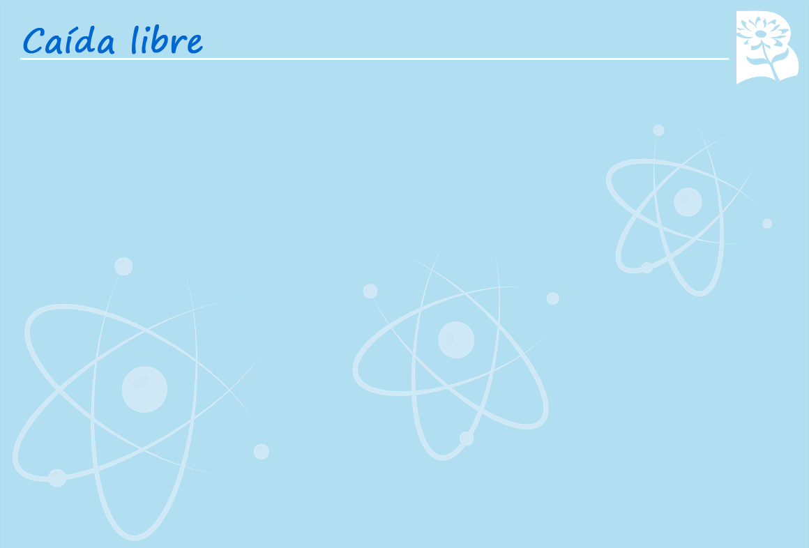

Selecciona la V si la afirmación en verdadera y F si es falsa.
Cuando no hay resistencia del aire los objetos caen con una aceleración dependiendo de su peso.
El valor de la gravedad en la tierra es aproximadamente de 9,8 m/s 2.
El valor de la aceleración de la gravedad siempre es positiva.